SIGNAL / 47: CAPTURED Visuell vurdering: UNVERIFIED. Captures are evidence for manual review; no automatic visual PASS. Software renderer does not verify hardware performance.
Manifest
kessler: CAPTURED 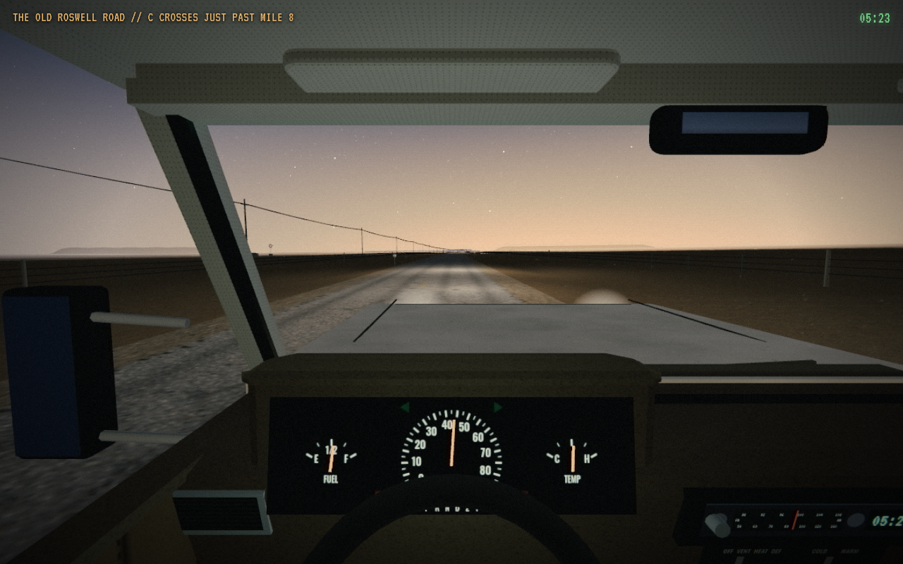
start_mile2_9 | path 4686.2 m | actual mile 2.9038565154013494 | map XYZ [4160.336896628505, 11.488446039073516, -31.188289854425957] | clock 19396.80 | roswell/roswell forward_0040m | path 4725.2 m | actual mile 2.9281458439604293 | map XYZ [4195.699159856082, 11.567924037355018, -47.82494052919848] | clock 19398.38 | roswell/roswell forward_0080m | path 4764.3 m | actual mile 2.9524337452533027 | map XYZ [4231.149675423678, 11.592271659717326, -64.2727316854232] | clock 19399.97 | roswell/roswell forward_0120m | path 4803.4 m | actual mile 2.9767212313621387 | map XYZ [4266.671851600015, 11.550367182919224, -80.56520868965649] | clock 19401.56 | roswell/roswell forward_0160m | path 4842.5 m | actual mile 3.001007796800505 | map XYZ [4302.250801254089, 11.437169347033045, -96.73335187491223] | clock 19403.15 | roswell/roswell 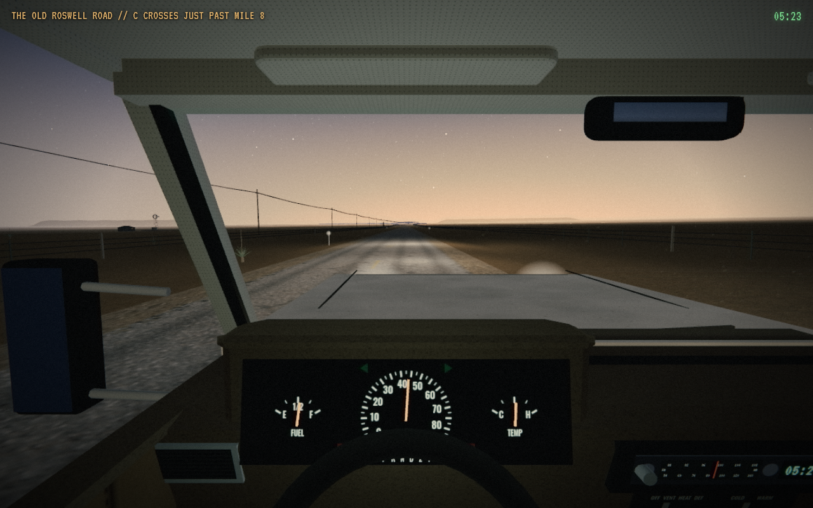
forward_0200m | path 4881.6 m | actual mile 3.0252934949517876 | map XYZ [4337.872180539058, 11.254134986804038, -112.8078151308534] | clock 19404.74 | roswell/roswell 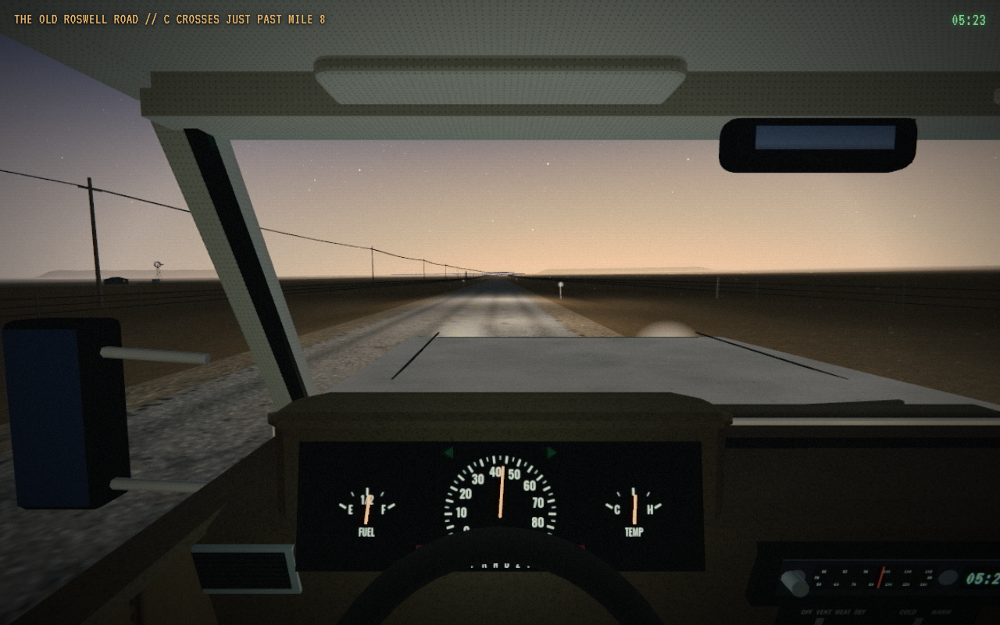
forward_0240m | path 4920.6 m | actual mile 3.0495782816041306 | map XYZ [4373.522975393138, 11.00851756147689, -128.816944016285] | clock 19406.33 | roswell/roswell 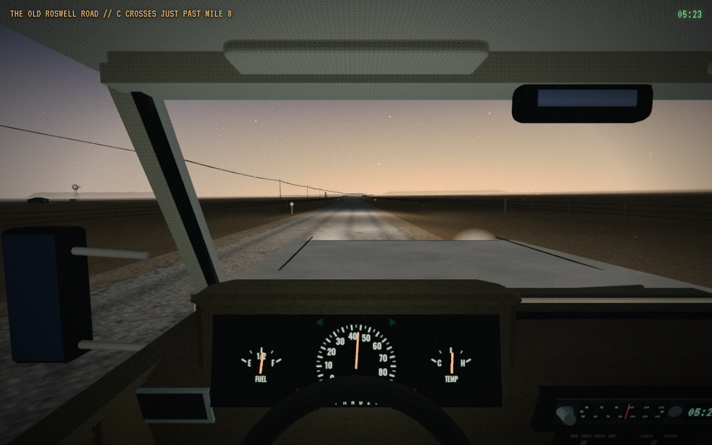
forward_0280m | path 4969.5 m | actual mile 3.079933499388688 | map XYZ [4418.110005030589, 10.632236823277497, -148.77586692623782] | clock 19408.31 | roswell/roswell forward_0320m | path 5008.6 m | actual mile 3.104216958835277 | map XYZ [4453.786003270514, 10.295501819767402, -164.72876033396162] | clock 19409.90 | roswell/roswell 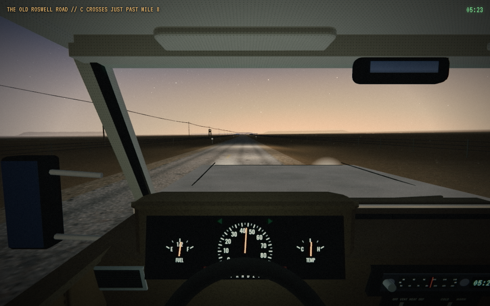
forward_0360m | path 5047.7 m | actual mile 3.1284999294842537 | map XYZ [4489.45819139026, 9.948167385905087, -180.69017079143472] | clock 19411.49 | roswell/roswell 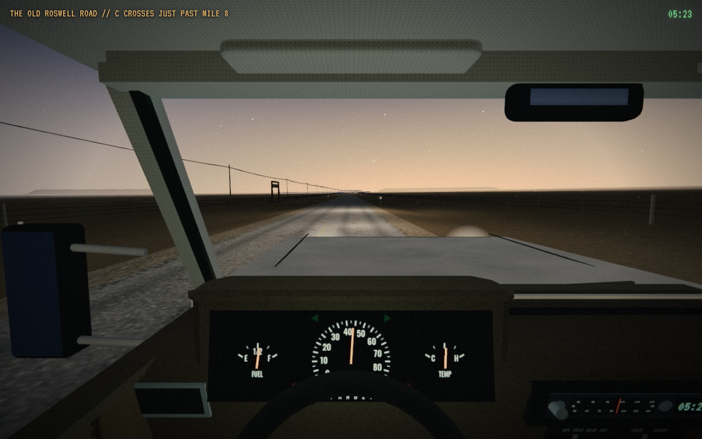
forward_0400m | path 5086.7 m | actual mile 3.152782488519697 | map XYZ [4525.1194687526295, 9.610812240456726, -196.6759413781658] | clock 19413.08 | roswell/roswell mile3.15_left | path 5086.7 m | actual mile 3.152782488519697 | map XYZ [4525.1194687526295, 9.610812240456726, -196.6759413781658] | clock 19413.08 | roswell/roswell forward_0440m | path 5125.8 m | actual mile 3.177064748648899 | map XYZ [4560.764357277554, 9.302639134036523, -212.6982201786942] | clock 19414.67 | roswell/roswell forward_0480m | path 5164.9 m | actual mile 3.2013469674404 | map XYZ [4596.389128441824, 9.039033067439973, -228.76517795693908] | clock 19416.26 | roswell/roswell 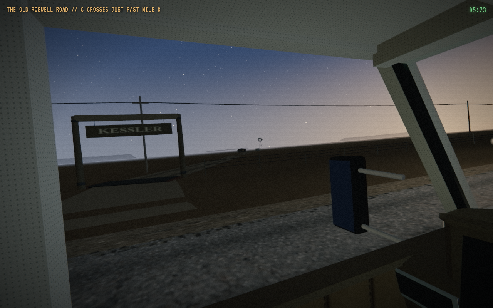
mile3.20_left | path 5164.9 m | actual mile 3.2013469674404 | map XYZ [4596.389128441824, 9.039033067439973, -228.76517795693908] | clock 19416.26 | roswell/roswell forward_0520m | path 5204.0 m | actual mile 3.2256289785838 | map XYZ [4631.991608101869, 8.82996751218606, -244.88147000296846] | clock 19417.85 | roswell/roswell 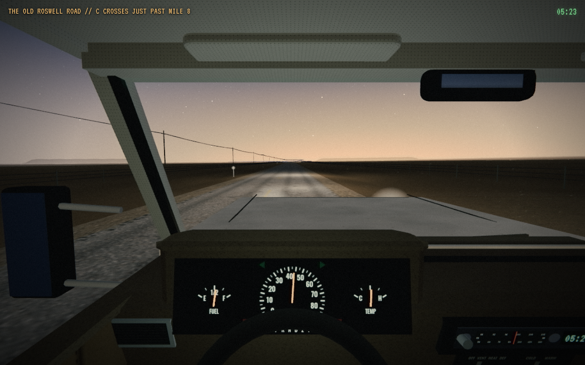
forward_0560m | path 5243.1 m | actual mile 3.249911026401467 | map XYZ [4667.571494159425, 8.679520883494312, -261.0475811477238] | clock 19419.43 | roswell/roswell mile3.25_left | path 5252.8 m | actual mile 3.2559816226738354 | map XYZ [4676.4629188957315, 8.651211969436453, -265.0969075013072] | clock 19419.83 | roswell/roswell forward_0600m | path 5282.1 m | actual mile 3.274193223065966 | map XYZ [4703.130299388413, 8.586131528510283, -277.2600101543689] | clock 19421.02 | roswell/roswell forward_0640m | path 5321.2 m | actual mile 3.2984756758204252 | map XYZ [4738.670990511973, 8.542996606353865, -293.5121122156103] | clock 19422.61 | roswell/roswell 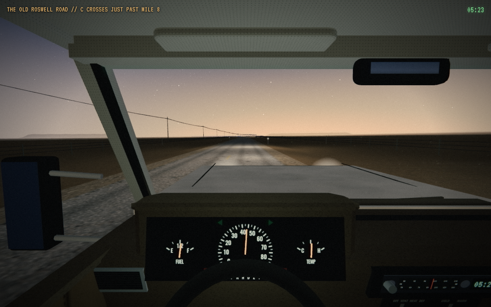
forward_0680m | path 5360.3 m | actual mile 3.322758530060959 | map XYZ [4774.198411051904, 8.538469465204013, -309.79320542344504] | clock 19424.20 | roswell/roswell forward_0720m | path 5409.2 m | actual mile 3.353112627221014 | map XYZ [4818.598507097207, 8.562514380940682, -330.1645929270052] | clock 19426.19 | roswell/roswell forward_0760m | path 5448.2 m | actual mile 3.3773964566927983 | map XYZ [4854.1206516439415, 8.58379662141741, -346.45719498147395] | clock 19427.77 | roswell/roswell forward_0800m | path 5487.3 m | actual mile 3.4016809054854926 | map XYZ [4889.654154289075, 8.58735384248895, -362.7250074614511] | clock 19429.36 | roswell/roswell forward_0840m | path 5526.4 m | actual mile 3.425966013979841 | map XYZ [4925.209019873866, 8.558370055527735, -378.9460698473945] | clock 19430.95 | roswell/roswell 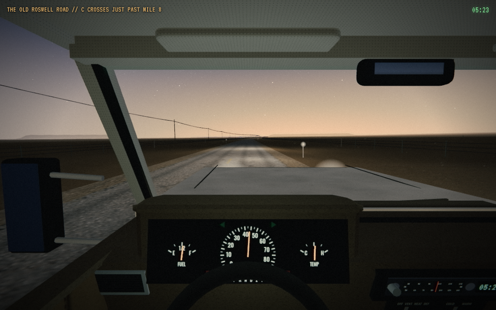
forward_0880m | path 5565.5 m | actual mile 3.4502518221920413 | map XYZ [4960.795525596957, 8.486565780438823, -395.09759061420687] | clock 19432.54 | roswell/roswell 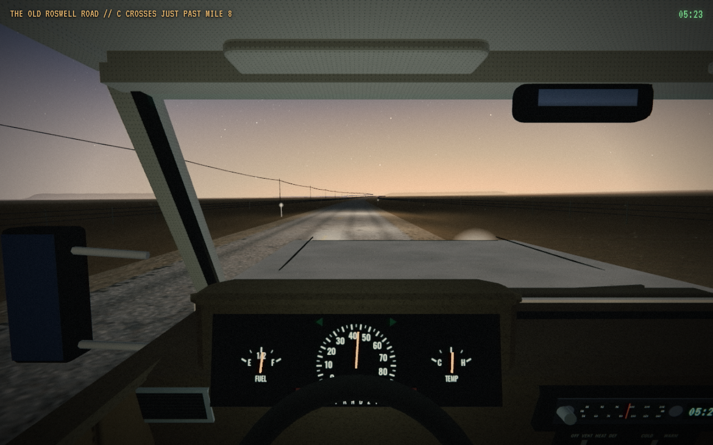
forward_0920m | path 5604.6 m | actual mile 3.4745380134807125 | map XYZ [4996.424614632824, 8.366737490602226, -411.15494443437444] | clock 19434.13 | roswell/roswell forward_0960m | path 5643.6 m | actual mile 3.4988252063607304 | map XYZ [5032.106834877655, 8.198913719885882, -427.0938680142459] | clock 19435.72 | roswell/roswell end_mile3_5 | path 5653.4 m | actual mile 3.504897334022412 | map XYZ [5041.037502186973, 8.149803877077284, -431.0558942447482] | clock 19436.12 | roswell/roswell 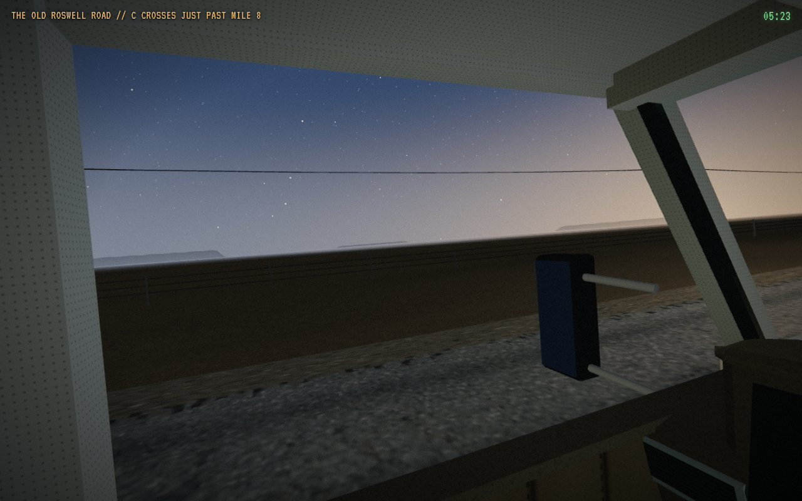
fixture_400m_player_default_a | path 5653.4 m | actual mile 2.9515261051972015 | map XYZ [4229.81984971929, 11.59186704789162, -63.66834828003448] | clock 19399.91 | roswell/roswell fixture_400m_player_default_b | path 5653.4 m | actual mile 2.9515261051972015 | map XYZ [4229.81984971929, 11.59186704789162, -63.66834828003448] | clock 19399.91 | roswell/roswell fixture_400m_picture_off_repeatability_a | path 5653.4 m | actual mile 2.9515261051972015 | map XYZ [4229.81984971929, 11.59186704789162, -63.66834828003448] | clock 19399.91 | roswell/roswell fixture_400m_picture_off_repeatability_b | path 5653.4 m | actual mile 2.9515261051972015 | map XYZ [4229.81984971929, 11.59186704789162, -63.66834828003448] | clock 19399.91 | roswell/roswell fixture_200m_player_default_a | path 5653.4 m | actual mile 3.0758006406756353 | map XYZ [4412.03817133084, 10.67136693795208, -146.06118074147798] | clock 19399.95 | roswell/roswell fixture_200m_player_default_b | path 5653.4 m | actual mile 3.0758006406756353 | map XYZ [4412.03817133084, 10.67136693795208, -146.06118074147798] | clock 19399.98 | roswell/roswell fixture_200m_picture_off_repeatability_a | path 5653.4 m | actual mile 3.0758006406756353 | map XYZ [4412.03817133084, 10.67136693795208, -146.06118074147798] | clock 19399.98 | roswell/roswell fixture_200m_picture_off_repeatability_b | path 5653.4 m | actual mile 3.0758006406756353 | map XYZ [4412.03817133084, 10.67136693795208, -146.06118074147798] | clock 19399.98 | roswell/roswell 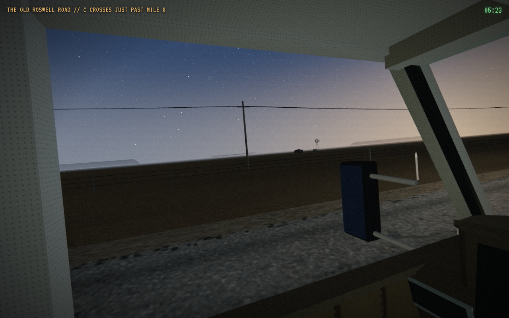
fixture_80m_player_default_a | path 5653.4 m | actual mile 3.150365364680228 | map XYZ [4521.571394357503, 9.628225878682061, -195.08083039708163] | clock 19400.01 | roswell/roswell fixture_80m_player_default_b | path 5653.4 m | actual mile 3.150365364680228 | map XYZ [4521.571394357503, 9.628225878682061, -195.08083039708163] | clock 19400.05 | roswell/roswell fixture_80m_picture_off_repeatability_a | path 5653.4 m | actual mile 3.150365364680228 | map XYZ [4521.571394357503, 9.628225878682061, -195.08083039708163] | clock 19400.05 | roswell/roswell 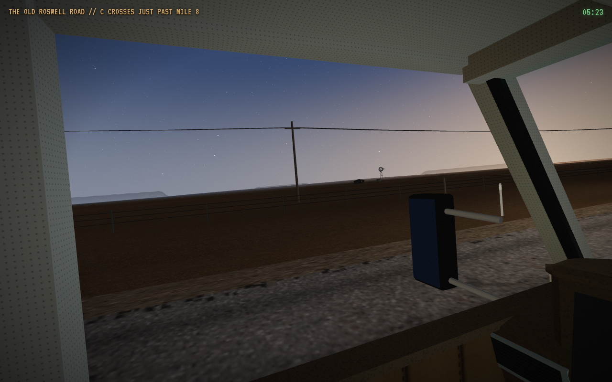
fixture_80m_picture_off_repeatability_b | path 5653.4 m | actual mile 3.150365364680228 | map XYZ [4521.571394357503, 9.628225878682061, -195.08083039708163] | clock 19400.05 | roswell/roswell